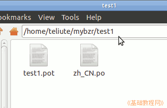
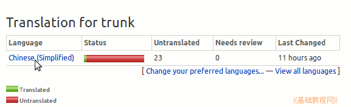
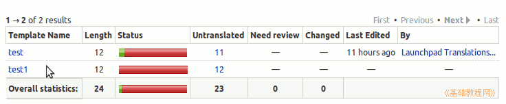
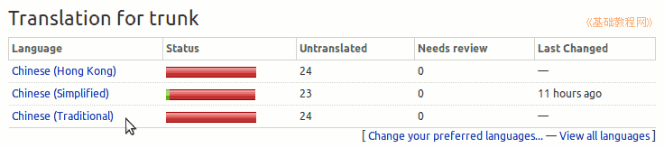
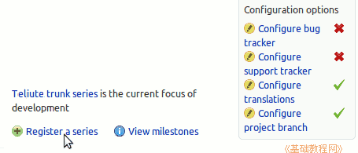
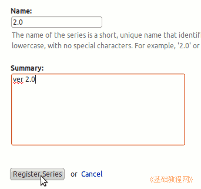
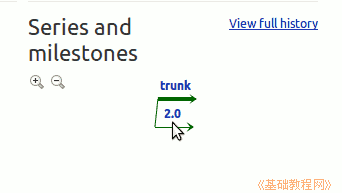

Launchpad 翻译指南
作者：TeliuTe 来源：基础教程网
五、翻译列表和系列 返回目录 下一课可以在一个分支中创建多个翻译包，还可以创建不同版本系列；
1、创建翻译列表
1）打开 mybzr 文件夹，再新建一个 test1 文件夹，里面也放上 test1.pot 和 zh_CN.po 文件；

2）打开终端，进入mybzr工作目录，运行添加命令更新分支：
cd mybzr
bzr add *
bzr commit -m "add test1"
3）再上传到 launchpad 自己的翻译项目中；
bzr launchpad-login teliute
bzr push lp:teliute
4）再打开浏览器，登录 Launchpad，依次点击自己的“用户名－Code－lp:teliute－Translations－Chinese (Simplified)”，查看翻译列表中的两个翻译包进度；


5）如果自己还选择了其他语言的话，还会在第一个里面看到其他语言进度；

2、创建不同版本系列
1）登录 Launchpad，打开自己的项目首页，在下边找到“Register a series”，点击创建一个新的系列；

2）接下来输入名称，比如2.0版本的就写个2.0，输入简介然后点下边的创建按钮；

3）完成后同样设置“link the branch to this series.”链接到自己，
同时在 Code 里找到bzr上传的路径 bzr push lp:teliute/2.0，或者完整路径 bzr push lp:~teliute/teliute/2.0

9）其他设置可以参考 trunk 分支的操作，还可以在项目设置中，将2.0设置为当前焦点分支；
本节学习了的基础知识，如果你成功地完成了练习，请继续学习下一课内容；
本教程由86团学校TeliuTe制作|著作权所有
基础教程网：http://teliute.org/
美丽的校园……
转载和引用本站内容，请保留版权信息和本站链接。